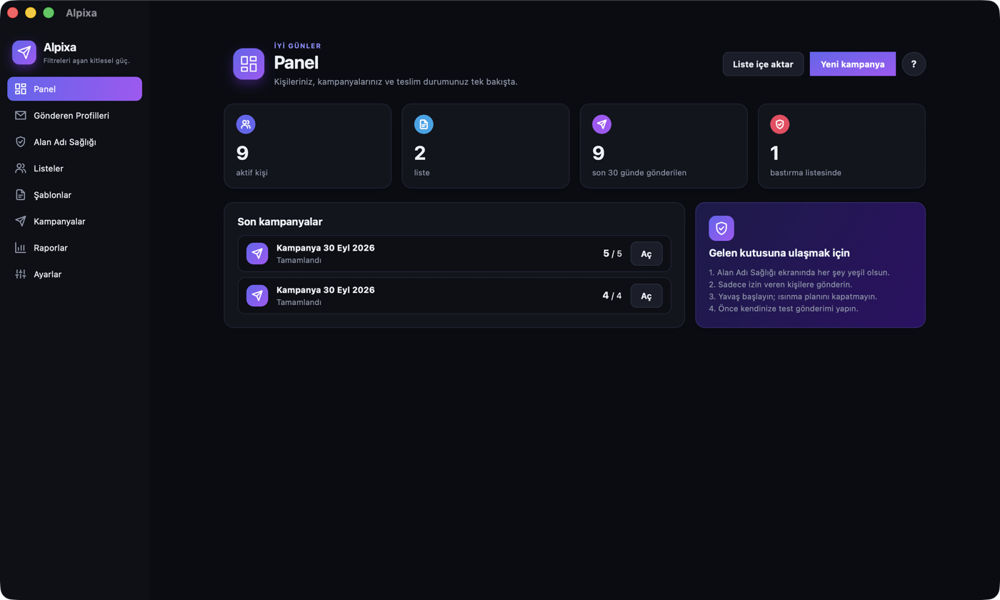
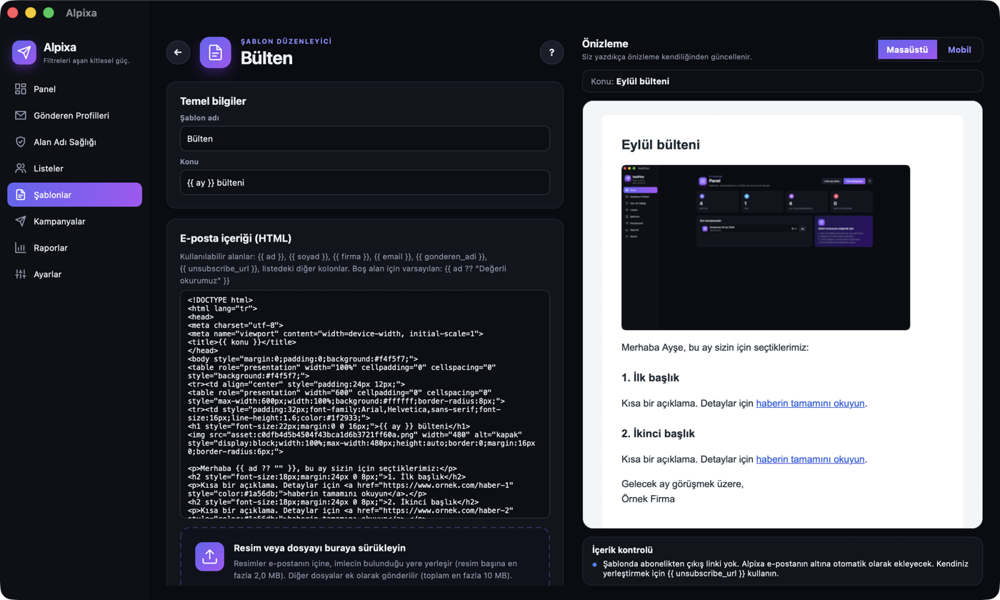
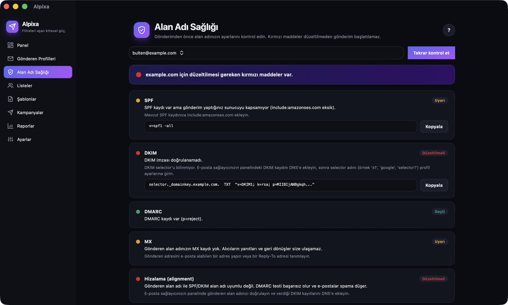

Alpixa, toplu e-postalarınızı kendi hesabınızdan güvenle gönderen masaüstü uygulamasıdır. Alan adınızı kontrol eder, hızı ayarlar, listeyi temiz tutar; siz sadece yazarsınız.
Açık kaynak · Tüm sürümler · Verileriniz yalnızca kendi bilgisayarınızda kalır

E-posta sunucularını bilmeniz gerekmez. Her alanın yanındaki küçük i ikonu ne yapmanız gerektiğini sade bir dille anlatır.
SPF, DKIM, DMARC, MX ve kara listeleri tek tıkla kontrol eder; eksik kaydı kopyalanmaya hazır verir.
Yeni hesaplarda günlük hacmi kademeli artırır, sağlayıcıya göre hızı ayarlar, sorun olursa gönderimi kendisi durdurur.
CSV veya Excel'i sürükleyin; hatalı, tekrar eden, tek kullanımlık ve daha önce çıkmış adresler otomatik ayıklanır.
Canlı önizlemeli düzenleyici; resmi sürükleyip bırakın, dosya ekleyin, kişiselleştirme alanlarını kullanın.
Gmail ve Microsoft 365'e tarayıcıyla giriş; Amazon SES, Brevo, Mailgun, SendGrid ve kendi SMTP sunucunuz.
Ulaşmayan e-postaları ve abonelikten çıkma isteklerini gelen kutunuzdan okuyup bu kişileri listeden çıkarır.
Türkçe, English, Deutsch, Français, Español ve Русский. Koyu ve açık tema.


Uygulama henüz dijital imzalı değil; ilk açılışta bir kez güvenlik uyarısı çıkar. Nasıl geçileceği aşağıda.